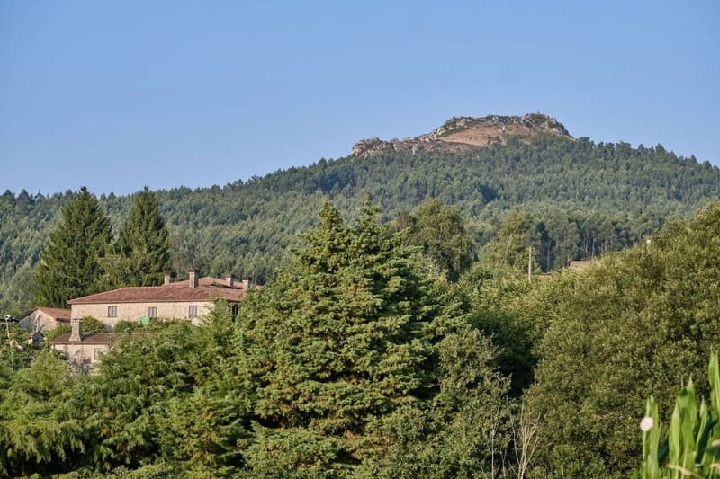
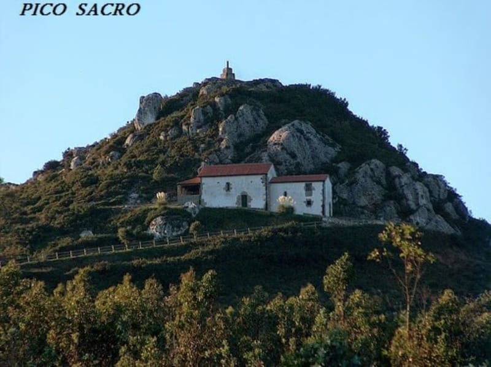
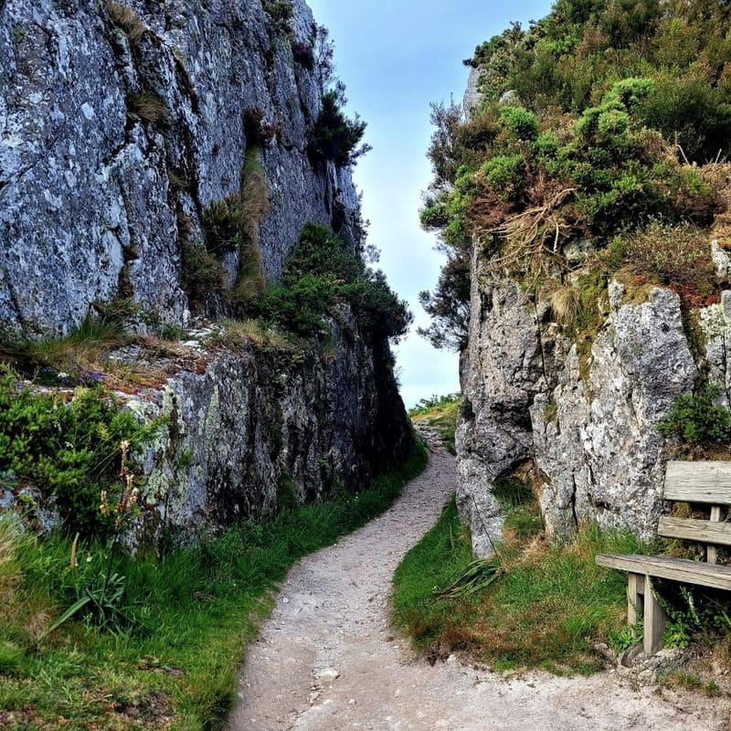

El Pico Sacro
El monte de la Reina Lupa

Las leyendas del Pico Sacro


La Reina Lupa
Los discípulos del Apóstol pararon en este monte para pedirle a la Reina Lupa unos bueyes y un carro con que llevar su cuerpo. Ella, aliada de los romanos, los mandó al bosque donde vivía un dragón.
El dragón del monte Ilicino
Este cuento podría haber acabado mal, pero el dragón cayó con las plegarias de los discípulos. La reina, al ver el milagro, se convirtió al cristianismo.
El paso de la Reina Lupa
La cumbre está partida en dos por un corte vertical. Dicen que lo abrió un gigante con su espada; otros, que era la puerta del palacio de la reina.
Las cuevas
Nadie sabe bien quién las hizo: unos dicen que los romanos, buscando oro, y otros que son naturales. A los niños les encanta la primera, porque se puede entrar un poco.
Los mouros
A lo largo de los siglos el Pico ha sido el centro de muchas leyendas: desde gigantes que vivían en su interior hasta historias de moros escondidos en sus entrañas.
Los refranes del tiempo
Cuando el Pico pone toquilla, agua tenemos, mucha o poquilla. En el valle del Ulla se mira al monte para saber si va a llover, y hay un refrán para cada nube.
Subir: siete minutos en coche hasta el aparcamiento y unas escaleras hasta la cima. Desde arriba se ven unos 30 km a la redonda. Parte del camino es la Vía de la Plata.
Monte Ilicino
Conocido en tiempos antiguos como Monte Ilicino, está directamente relacionado con la llegada de los discípulos del Apóstol Santiago.
Vinieron hasta Galicia porque querían enterrarlo en las tierras donde había predicado.
El Pico Sacro está tan arraigado en la zona, que es tema principal de dichos y refranes locales, sobre todo relacionados con la meteorología.
- «Cuando el Pico cubre el cabello, chicas del Ulla poned el pañuelo»
- «San Cristóbal con gorro, agua hasta el morro»
Capilla de San Sebastián
En el S. XV tuvo lugar en Galicia la revuelta de los Irmandiños. Al igual que sucedería en Francia tres siglos después, el pueblo cansado de los abusos de los nobles decidió rebelarse.
Así que asaltaron y destruyeron sus fortalezas, entre ellas el monasterio que había en el Pico Sacro. Los vecinos aprovecharon las piedras de sus muros para hacer casas.
En la actualidad el único edificio que se conserva en su cima es la capilla de San Sebastián.
Está construida sobre la roca de la montaña. Solamente se abre dos veces al año para sendas romerías, en el mes de enero y mayo.
El presbiterio data del S. XI, la Capilla Mayor es románica.
Pico Sacro, mirador de estrellas
Lo cierto es que desde su cima hay unas impresionantes vistas que abarcan unos 30 km a la redonda, convirtiendo esta montaña en un lugar privilegiado para mirar las estrellas o simplemente contemplar el paisaje.
Gracias a unos paneles informativos podemos saber qué pueblos estamos viendo desde este mirador natural.
Una vez al año, en verano, el Ayuntamiento organiza una noche de observación de estrellas, siempre con la ayuda de expertos en la materia.
¿Cómo llegar al Pico Sacro?
Para llegar a este lugar mítico hay que conducir hasta Lestedo, al final del pueblo viniendo de Santiago, estaban los primeros indicadores.
Un cambio en la señalización horizontal obligó a tener que coger el segundo desvío, hacia el campo de fútbol de Lestedo, para ir hasta la montaña.
Parte del trazado discurre por la Vía de la Plata. Por eso son numerosos los peregrinos que deciden desviarse del Camino para subir hasta su cima.
Abrir en Google Maps (se abre en otra pestaña)
Cuando era niña había que trepar por las rocas para poder subir hasta la parte más alta. Desde hace unos años hay escaleras para poder subir.
En el suelo, cerca de la cima, hay varios postes de madera con códigos QR para enlazar con las Webs del Ayuntamiento. Allí encontrarás información más detallada sobre el Pico Sacro.
Las cuevas del Pico Sacro
No puedo olvidarme de las cuevas del Pico Sacro.
Hay dos cuevas. A una de ellas, la que tiene una galería ascendente, se llega cruzando la montaña de un lado al otro a través del Paso de la Reina Lupa, un corte vertical que divide la montaña en dos.
A la cueva con la galería descendente se va por un sendero que baja desde la parte inferior de la Capilla de San Sebastián.
A los niños les encanta visitar la primera cueva, ya que se puede acceder un poco en su interior y no es peligrosa de visitar. Mejor entrar con una linterna, lo hace más interesante.
Hace unos años un equipo de espeleólogos se adentraron en ellas. Al parecer las cuevas se unen en su interior.
La cueva descendente tiene tallados unos escalones. Mejor no acercarse porque parece peligroso. He visto quien tira piedras en su interior. Es una tradición que se remonta muchos años atrás. Se supone que era para ahuyentar al dragón que vivía dentro.
Centro de Interpretación del Pico Sacro
A pocos metros de Casa de Casal se encuentra el Centro de Interpretación del Pico Sacro.
Este edificio fue casa rectoral. En la actualidad alberga un museo dedicado a esta mítica montaña.
Para visitarlo es necesario pedir cita en el Ayuntamiento de Boqueixón (se abre en otra pestaña).
Misterios del pasado
Calle de la Reina Lupa
La cima del Pico Sacro está dividida en dos mitades por el llamado Paso o calle de la Reina Lupa.
Se desconoce su origen. Hay quien dice que servía para dar acceso a una de las cuevas. Sería algo sin sentido porque se puede llegar por otro sendero.
Galicia es mágica, mires donde mires.
¿Te quedas?
Llama o escribe por WhatsApp al 698 148 323. Se habla inglés y francés.
Ver disponibilidad